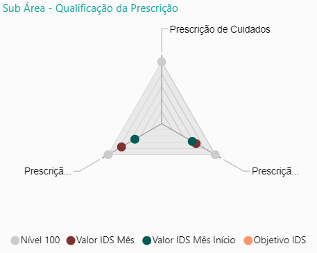

O que Fazemos
Ações de Sensibilização
A USF Aquilino Ribeiro (Moimenta da Beira), no âmbito da temática “Drogas e Álcool”, realizou ontem uma ação destinada aos alunos do Secundário, do Agrupamento de Escolas de Moimenta da Beira, em parceria, com o Gabinete de Ação Social da Câmara Municipal de Moimenta da Beira, com a Comissão de Proteção de Crianças e Jovens em Risco e com o Serviço de Psicologia e Orientação do Agrupamento. Esta ação foi realizada nas novas instalações do quartel da GNR de Moimenta da Beira, o que permitiu aos alunos uma visita guiada ao quartel e depois na sala de instrução, assistirem a uma palestra sobre a temática “Drogas e Álcool” por parte do Núcleo da Escola Segura.

Áreas e Sub-Áreas da USF
